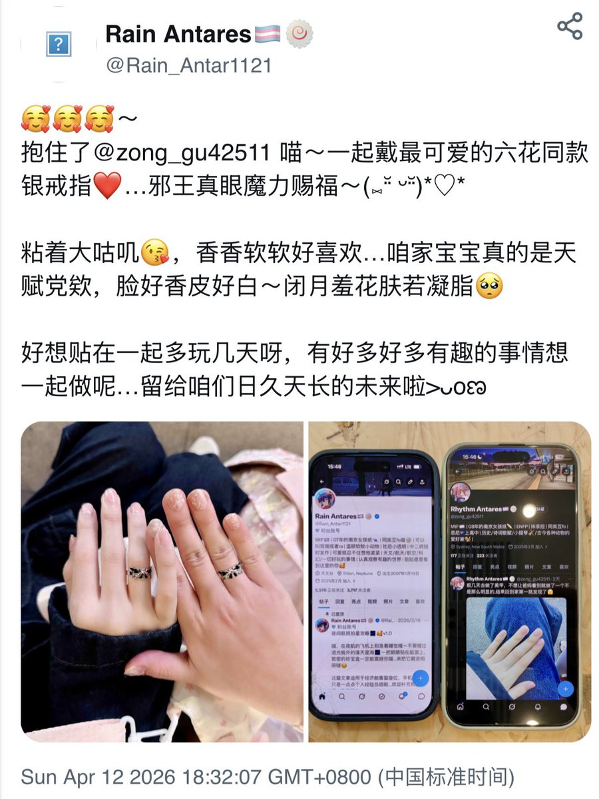
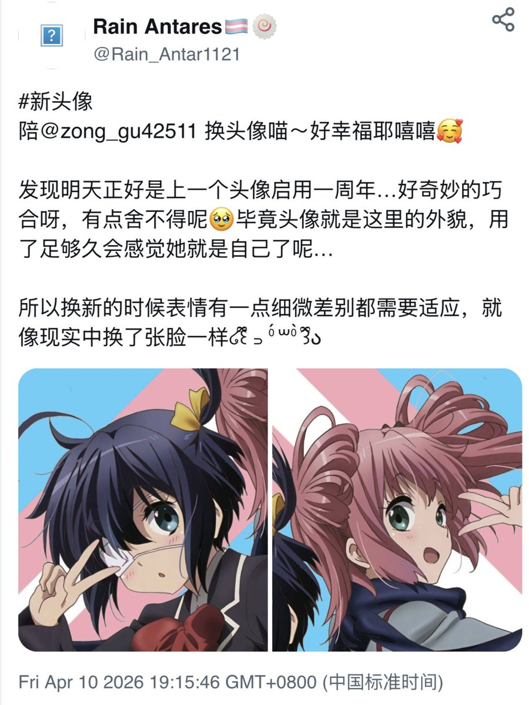
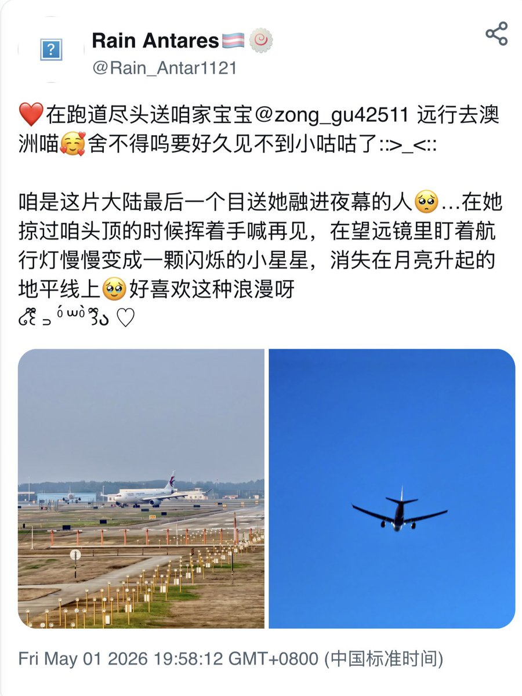
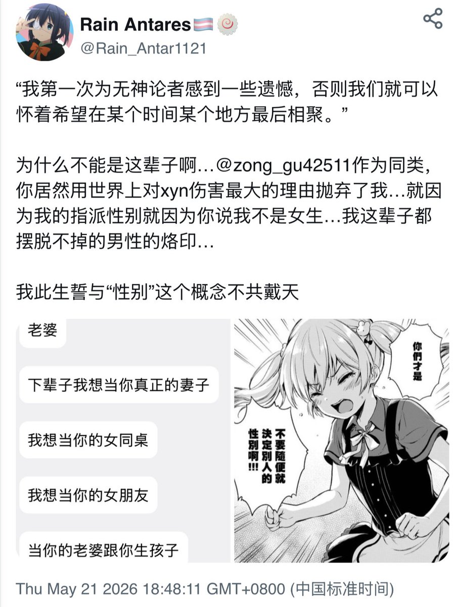

唉啊…这两天有好多开心的事情！可是（太可恶了）就是要有个丧门星蹦出来搅乱窝的心情呜呜…🥺
昨晚陪她吃饭…然后拿到咱的手机几分钟就把窝好多重要的帖子删掉了…气死我了气死我了啊啊啊૮₍ɵ̷﹏ɵ̷̥̥᷅₎ა无论是不是关于你，推文都是咱倾注心血最重要的记忆…不要这样白白败坏我对你的信任啊
好幼稚唉…你怕谁看到的话我不同意又没用ww…懒得生气啦，幸好我的帖子都有存档呢，所以打算有时间逐个补档一遍～我重要的回忆不会被这么抹掉的哦🥰
唔…我再也不会把手机随便给任何人了即使是目前最信任的人…大家也不要像我这样傻…要保护好自己珍贵的东西哦🥹
昨晚陪她吃饭…然后拿到咱的手机几分钟就把窝好多重要的帖子删掉了…气死我了气死我了啊啊啊૮₍ɵ̷﹏ɵ̷̥̥᷅₎ა无论是不是关于你，推文都是咱倾注心血最重要的记忆…不要这样白白败坏我对你的信任啊
好幼稚唉…你怕谁看到的话我不同意又没用ww…懒得生气啦，幸好我的帖子都有存档呢，所以打算有时间逐个补档一遍～我重要的回忆不会被这么抹掉的哦🥰
唔…我再也不会把手机随便给任何人了即使是目前最信任的人…大家也不要像我这样傻…要保护好自己珍贵的东西哦🥹



